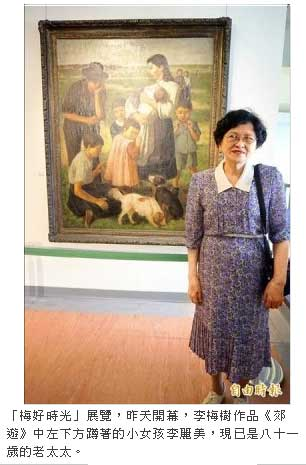
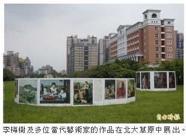

〈台北都會〉
李梅樹畫中人女孩成老婦 「梅好時光」開展
張安蕎｜自由時報／新北都會新聞∣2015年5月15日
李梅樹紀念館與國立台北大學合作，舉辦「梅好時光」展覽，昨天開幕式現場，特地邀請到李梅樹畫作中的模特兒現身，與現場來賓對話，相隔逾半世紀，畫裡的小女孩已長大成八十一歲的老太太，與作品相映成趣。
李梅樹紀念館館長李景光表示，此次展出的李梅樹真跡，包括一九四八年至一九七六年等四幅跨越不同年代的大型人物畫作，這些畫作風格及筆觸各不相同，可以看到美女動人的姿態，也可看到高深的景深、透視技巧。
作品《郊遊》中左下方蹲著的小女孩，是李梅樹的女兒李麗美，當時她不過十多歲，現已是八十一歲的老太太，另一幅《小憩（一）》描繪的美麗少女，是三峽祖師廟的誦經師洪美枝，現也已七十四歲，「畫中人」昨現身展場，引起民眾一陣驚呼。
洪美枝說，李梅樹本來是找別人做模特兒，但因對方坐不住才改找她，李梅樹相當嚴格，做他的模特兒不能動、不能講話，還要一直維持拿書的姿勢，雖然辛苦但非常值得。她回憶，李梅樹幫祖師廟的誦經少女們找了裁縫工作，讓大家得以維持生計，「真的很懷念、很感謝他！」
此次活動也連同賴唐鴉、邱玉錡等在地藝術家，以「動物當家」為主題展出數十件陶瓷、木雕等各類作品，北大草原上也同步展出李梅樹的大型複製品及漫畫家凌群等人的精彩作品，展期即日起至六月三十日止。